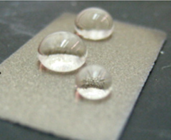
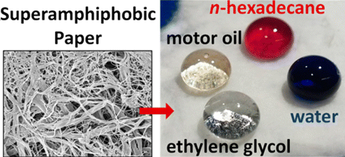

Undergraduate Research with Hess Group (08/2017 - Present)
Research: The Hess group investigates thin film and surface coating processes to design unique value added products made from various (paper, polymers, metal, etc.) materials. Particular topics of study have included using thin film coatings to create superhydrophobic or superoleophobic materials. These are cases where the material is made to repel water or oil that the material does not absorb the liquid and can even roll off the material with a slight tilt.
Fall 2017: I led a study on the influence of color-dyes on the solid-liquid contact angle in experiments studying surface wetting properties. I designed experimental methods and collected contact angle data of dyed liquids on thin film coated surfaces as a function of dye concentration for dyes of varying structure.
Pictures: The pictures below are taken from papers published by the Hess Group Laboratory that can be found here and here
Fall 2017: I led a study on the influence of color-dyes on the solid-liquid contact angle in experiments studying surface wetting properties. I designed experimental methods and collected contact angle data of dyed liquids on thin film coated surfaces as a function of dye concentration for dyes of varying structure.
Pictures: The pictures below are taken from papers published by the Hess Group Laboratory that can be found here and here

